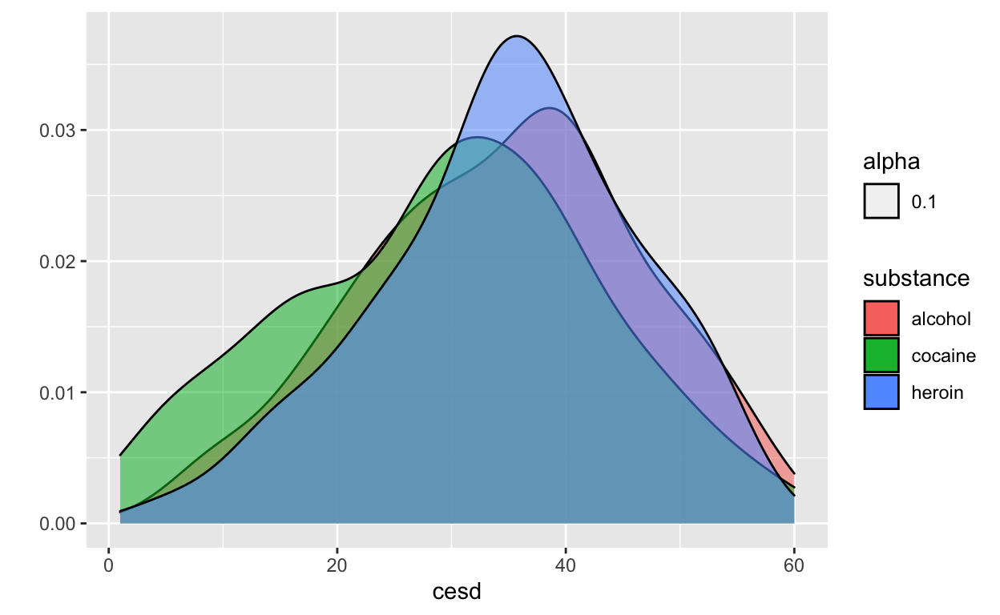
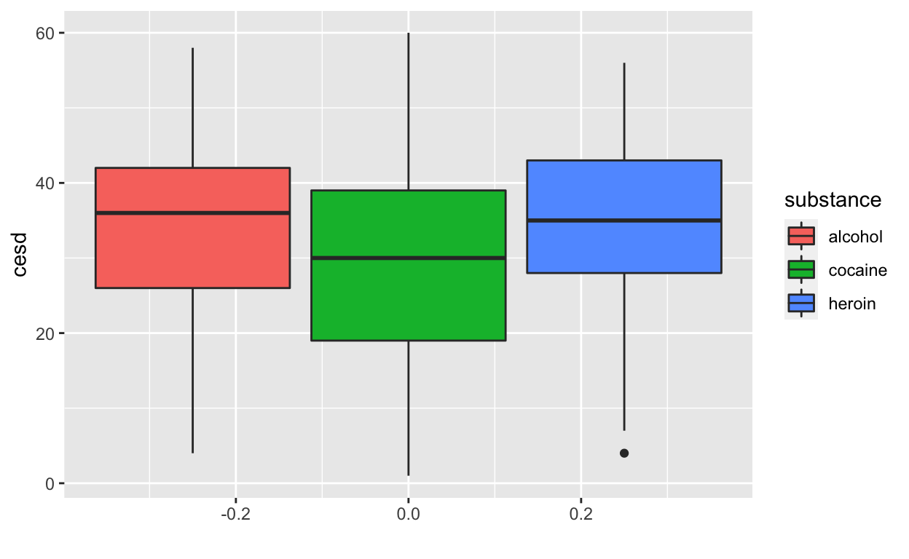
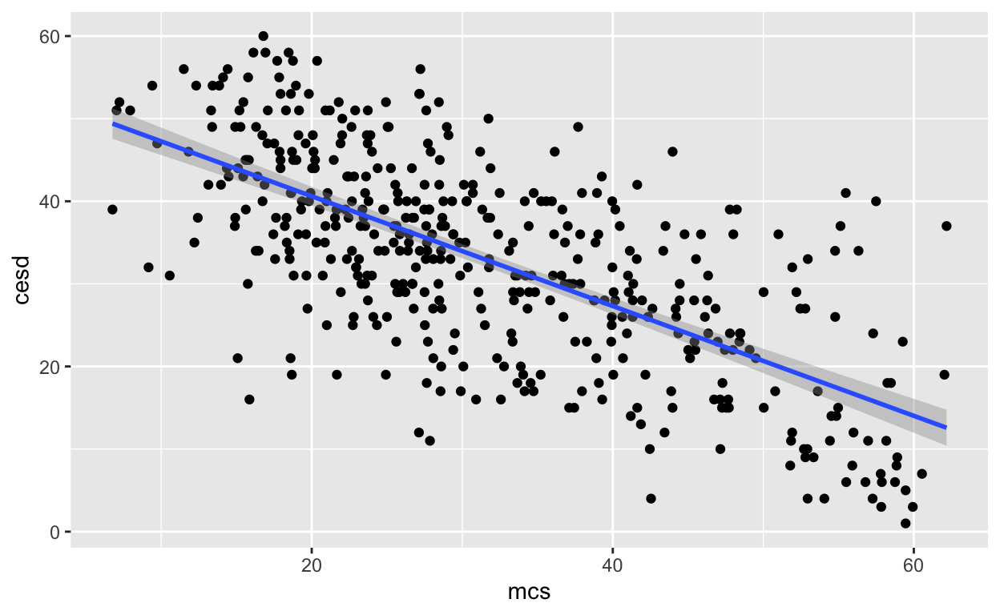

In this exercise, we’re going to be looking at three different ways to test hypotheses about the relationship between two variables. Recall that we have different statistical tests depending on the precise types of variables.
| Dependent Variable Type | Group Variable Type | Test |
|---|---|---|
| Continuous | Categorical, Binary | t-test |
| Continuous | Categorical, >3 Groups | Analysis of Variance (ANOVA) |
| Continuous | Continuous | Correlation |
We will introduce each individual test first, and then illustrate how the same results can also come from a linear regression model. With regression, you can test differences between groups the way you might want to with t-tests and ANOVA or estimate the magnitude of the association between two variables, the way you may want to with a correlation. One major advantage of regression models is that they can adjust for additional, potential confounding variables while the other tests mentioned here only deal with two variables at a time. With regression models, you can also control statistically for the way that some third (or fourth, fifth, etc.) variable may influence or create an alternative mechanism to explain the relationship between the two variables you are interested in.
In most social and behavioral research, we know that social context in which the main relationships we are interested in are informed by complex social patterns and processes and would want to account for those additional factors statistically. For instance, how substance use is associated with quality of life is informed by all sorts of demographic (age, gender identity, race, ethnicity, culture, sexual orientation, marital status) and socioeconomic (education, income, occupational) factors – not to mention social patterns at family, neighborhood, and state levels – that you might want to account for to accurately estimate the relationship between substance use and quality of life.
This tutorial assumes that you are familiar with each of these tests, even if you’re a little rusty. In other words, we won’t really be talking as much about what a t-test is so much as how to conduct one using R If you want more of a refresher on these topics themselves, you might consult previous research methods course materials and/or Chapters 4 and 5 from Introduction to Statistics with Randomization and Simulation\(^1\), which is available for free here, along with brief video introductions of these concepts available as well (see citation below for link).
\(^1\) Diez, D. M., Barr, C. D., & Çetinkaya-Rundel, M. (2014). Introductory statistics with randomization and simulation. OpenIntro. https://www.openintro.org/book/isrs/
We will be using the HELPrct data again. For reference, here are some of the variables included in the dataset, including which are continuous, categorical, and binary.
| Variable Name | What the variable measures | Units | Continuous or Categorical? |
|---|---|---|---|
age |
subject age at baseline | in years of age | Continuous |
anysub |
use of any substance post-detox | no, yes | Categorical, Binary |
cesd |
Center for Epidemiologic Studies Depression measure at baseline (high scores indicate more depressive symptoms) | # of depressive symptoms | Continuous |
e2b |
number of times in past 6 months entered a detox program (measured at baseline) | # of times | Continuous |
homeless |
binary measure of permanent housing status | housed, homeless | Categorical, Binary |
i1 |
average number of drinks (standard units) consumed per day, in the past 30 days (measured at baseline) | # of drinks | Continuous |
mcs |
SF-36 Mental Component Score (measured at baseline, lower scores indicate worse mental health quality of life status) | Score from 0-100 | Continuous |
pcs |
SF-36 Physical Component Score (measured at baseline, lower scores indicate worse physical health quality of life status) | Score from 0-100 | Continuous |
racegrp |
race/ethnicity: levels | black, hispanic, other, white | Categorical |
sex |
binary measure of sex/gender | male, female | Categorical, Binary |
substance |
primary substance of abuse | alcohol, cocaine, heroin | Categorical |
treat |
binary indicator: whether randomized to HELP clinic | no, yes | Categorical, Binary |
Let’s focus on cesd as the continuous dependent variable, and for independent variables: homeless for a binary variable, substance for a categorical variable, and mcs as a continuous variable.
A test of difference in means is typically referred to as a t-test. The “t” refers to a “t” distribution, which generally is useful for smaller samples, and approximates the normal distribution for larger samples. The principle of the test is whether the size of the difference in mean value of the dependent variable between groups is likely to be due to chance, statistically speaking. You can find more details here if you want a background on t-tests.
We can visualize this comparison with two groups, similar to what we did with just one group in exploratory data analysis by filling in the color of the bars based on whether the respondent was housed or homeless (the fill=homeless piece of code is new, but the rest we’ve seen in the exploratory data analysis tutorial).
qplot(x=cesd, ylab = "Number of individuals (n)", fill=homeless, data=HELPrct)If it’s a little hard to tell the shape of the distribution, you might consider a density plot instead of a histogram. (A note on the code - the alpha=0.1 segment just makes the color translucent so you can see the two distributions overlayed on the other.)
qplot(x=cesd, fill=homeless, geom="density", alpha = 0.1, data=HELPrct)It looks like the mean cesd score of the housed individuals may be a bit lower (to the left of) than the mean / peak of the individuals who were homeless’ cesd scores. Is this difference in cesd scores actually statistically significant?
When we conduct statistical tests, we are testing an explicit hypothesis – essentially, to use the data from our sample to make inferences about whether we think these patterns in our sample data are reflective of the population processes or whether they are due to chance.
Specifically, there is usually a null hypothesis – a theoretical version of reality that you can’t really prove or test where the means are identical – and an alternative hypothesis, which we can falsify with our data. Think of court proceedings as a good analogy here, with you on a jury. You can never prove that the defendant did not do the alleged crime or that they are innocent; you can’t go back in time and see someone else do the crime. You can only, in the face of the evidence you are presented, decide that there is not enough evidence to find them guilty – and thus they are not guilty rather than found “innocent”. Statistical hypothesis testing is similar. The null hypothesis is that the mean cesd scores of individuals who are housed is equal to the mean cesd score of individuals who are homeless. The alternative is that the means are not equal. We cannot conclude that the null hypothesis is true and confirm that the two means are identical, but we have enough evidence to tell that they are not different (i.e., we fail to reject the null). If there is compelling, strong evidence, we can determine that the means are different from each other and conclude that we should reject the null hypothesis and accept the alternative hypothesis (that they are different).
The t-test uses information on the mean and standard deviation of cesd scores from each group (I’m sparing you the equations, but you can find that here if it’s helpful), so one way where you won’t be able to tell that the two means are different is because the standard deviation or variance in the data is wide. In that case, so much of the two distributions will overlap – because they both have a large variance and are more spread out – such that it will be difficult to determine that the two groups (individuals who are housed and individuals who are homeless) are actually different from each other with respect to their cesd scores.
We’re going to use the t.test() function to conduct this test. A note on the code: the syntax in R for this kind of test is dependent variable ~ independent variable with the “~” as the symbol that connects the two variables.
##
## Welch Two Sample t-test
##
## data: cesd by homeless
## t = 1.8599, df = 443.36, p-value = 0.06356
## alternative hypothesis: true difference in means is not equal to 0
## 95 percent confidence interval:
## -0.1237566 4.4912756
## sample estimates:
## mean in group homeless mean in group housed
## 34.02392 31.84016Let’s walk through the output together.
The simplest case is to look just at the p-value and evaluate whether it is below our common 0.05 threshold. This p-value is larger – p=0.065 – which suggests that we do not have enough evidence to reject the null hypothesis, or we cannot conclude that the average cesd scores are different between individuals who are housed than those who are homeless.
You might also see that the mean cesd for individuals who were homeless was 34.02 and those who were housed was 31.84, or a difference of just 2.1838 points on the CESD scale. We are 95% confident that the true difference between the mean CESD scores were between -0.12 and 4.49 points. Since the null hypothesis was that the difference between the groups was 0 (i.e., there was no difference), that the null value is included in this confidence interval is a different expression of the same evidence as the p-value.
cesd_homeless <- lm(cesd~homeless, data=HELPrct)
summary(cesd_homeless)You can read the middle section like a table – each row is one part of the regression model / estimate and the columns are the different coefficients, standard error, test statistic, and p-value for the hypothesis test of whether that coefficient is equal to 0 (the null; the alternative is that the estimate is not equal to zero).
Hopefully, you’re noticing how the t-test and simple linear regression are effectively the same thing when there is a binary independent variable. With regression, the coefficients can generally be interpreted as "for every 1 unit difference in [independent variable], there is a ___ unit higher/lower [dependent variable] score. For instance, with age, for every 1 year older, the CESD score are X.XX points higher, on average. With a binary variable, the units of the independent variable are you are either housed or homeless – the coefficient reflects the difference between one (whichever is the intercept, or the reference group) and the other.
With a continuous dependent variable, Analysis of Variance (ANOVA) is a common test of categorical independent variables. Similar to the t-test, the null hypothesis is that the means of the dependent variable are equal in each group, and the alternative hypothesis is that one of the group’s means is different.
We can use visualize the distribution of age by the binary gender variable to see respondents’ age varies by substance use type, just as we did before with two groups.

Another way to visualize this across multiple groups is to use box plots, which illustrate the median and interquartile range. Remember that in a normal distribution the mean and the median are the same, so a boxplot can be a good approximation of whether the measure of central tendency differs by groups.

From either depiction, the measure of central tendency for age (mean or median) does not look extremely different by substance use type - either the center peak of the distribution in the first plot or the dark horizontal bars in the boxplot (the median). It may be that there is enough difference between younger heroin and/or cocaine users and older alcohol users to see a difference.
State the hypotheses and conduct the test. Our null hypothesis is that the average cesd score is the same for each substance group (alcohol, cocaine, and heroin). The alternative hypothesis is that the average cesd score for at least one of the substances does not equal to each other.
A note about the code: we are running the ANOVA with the aov() function, and saving the results in something called substance_anova, which we ask to be summarized in the second line of code.
## Df Sum Sq Mean Sq F value Pr(>F)
## substance 2 2704 1352.1 8.936 0.000156 ***
## Residuals 450 68084 151.3
## ---
## Signif. codes: 0 '***' 0.001 '**' 0.01 '*' 0.05 '.' 0.1 ' ' 1It seems that there is a significant difference, given the small p-value. You might note that the F-test statistic with 2,450 degrees of freedom is 8.936, and the p-value is 0.000156.
A note about the code: we are running the regression with the lm() function (for linear model), and saving the results in something called substance_reg, which we ask to be summarized in the second line of code.
##
## Call:
## lm(formula = cesd ~ substance, data = HELPrct)
##
## Residuals:
## Min 1Q Median 3Q Max
## -30.8710 -8.4211 0.6271 8.5789 30.5789
##
## Coefficients:
## Estimate Std. Error t value Pr(>|t|)
## (Intercept) 34.3729 0.9246 37.178 < 2e-16 ***
## substancecocaine -4.9518 1.3602 -3.640 0.000304 ***
## substanceheroin 0.4981 1.4405 0.346 0.729669
## ---
## Signif. codes: 0 '***' 0.001 '**' 0.01 '*' 0.05 '.' 0.1 ' ' 1
##
## Residual standard error: 12.3 on 450 degrees of freedom
## Multiple R-squared: 0.0382, Adjusted R-squared: 0.03393
## F-statistic: 8.936 on 2 and 450 DF, p-value: 0.0001563You can also get this information back from the regression, not just in the summary statement. If you use the anova() function with the name of the regression model, R will return the ANOVA results that are based on the regression model.
For two continuous variables, we often capture the relationship with a correlation coefficient. Visually, we can represent correlation with a scatterplot – the closer the cluster of points are to the shape of a line, the stronger the correlation, and the more like a diffuse cloud of points, the weaker the correlation.
qplot(x=mcs, y=cesd, data=HELPrct)This seems like a fairly strong, negative correlation. And that makes sense – the mental components score is close in content to the CESD scale. They should be highly correlated, since they’re measuring very similar concepts.
We can both estimate the correlation coefficient and test the null hypothesis that the correlation (r or \(\rho\)) is 0 with the cor.test() function.
cor.test(HELPrct$cesd, HELPrct$mcs, method="pearson")Results of the Pearson correlation indicated that there was a significant negative correlation between mental components score and CESD depressive symptoms, (r(451) = -0.682, p = <0.0001).
mcs_reg <- lm(cesd ~ mcs, data=HELPrct)
summary(mcs_reg)Let’s make sure you got the right output!
The summary output of the regression model includes an estimate similar to the correlation coefficient. R-squared can be interpreted as the percentage of the variation in the dependent variable that is explained by the independent variable.
You can even add the regression line to the scatterplot to visualize the correlation.
## `geom_smooth()` using formula 'y ~ x'
Run a regression with cesd as the dependent variable and racegrp as the independent variable.
Let’s check to make sure you got the correct output:
This tutorial introduced how to conduct t-tests, ANOVA, and correlation hypothesis tests as individual tests, as well as how a linear regression model offers nearly the exact same information and facilitates controlling for additional variables.
The principles of hypothesis testing was also revisited to clarify the role of the null and alternative hypotheses.
Want to learn more about…? Below are some excellent supplemental readings. Some of these readings are more (B)eginner friendly and others are more (A)dvanced, and so we have marked each reading appropriately.
\(^B\)Kaplan, D. T., Horton, N. J., & Pruim, R. J. (2015). Start Modeling with R.
\(^B\)Horton, N. J., Pruim, R., & Kaplan, D. T. (2015). A Student’s Guide to R. Project MOSAIC.